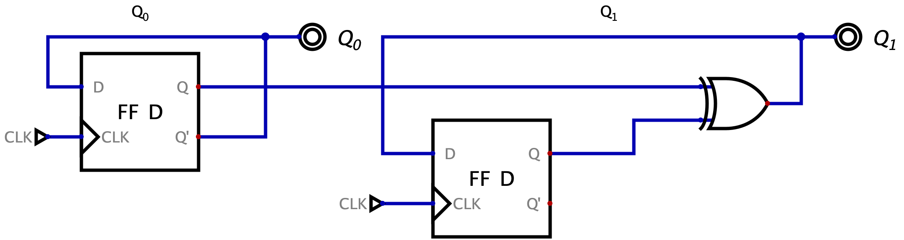

Definizione - Contatore senza ingressi
Un contatore (in generale) è una rete sincrona (in questo caso senza ingressi) che effettua continuamente un ciclo attraverso tutti gli stati interni rendendo disponibile in uscita lo stato corrente.
Esempio - Sintesi diretta - Contatore binario modulo \( 4\)
Per realizzare un contatore binario modulo
\( 4\)
(ovvero che memorizza
\( 4\)
stati) sono necessari
\( 2\)
bit di stato (ovvero due flip-flop). Per realizzare la logica di "incremento" sarebbe possibile utilizzare un
\( n\)
bit adder a cui è costantemente aggiunto il numero
\( 1\)
. Tale realizzazione sarebbe inefficiente, in quanto utilizza un numero elevato di componenti.
Un adder, infatti, oltre alla logica di incremento implementa ulteriori funzionalità (come la possibilità di inserire il riporto e di calcolarlo) mentre, in questo caso, non deve realizzarli.
Osservando la sequenza degli stati
 è possibile notare che il bit
\( (Q_{0})^{n + 1}\)
non è altro che il NOT del bit
\( (Q_{0})^{n}\)
, mentre il bit
\( (Q_{1})^{n + 1}\)
è dato dallo XOR tra
\( (Q_{1})^{n}\)
e
\( (Q_{0})^{n}\)
.
è possibile notare che il bit
\( (Q_{0})^{n + 1}\)
non è altro che il NOT del bit
\( (Q_{0})^{n}\)
, mentre il bit
\( (Q_{1})^{n + 1}\)
è dato dallo XOR tra
\( (Q_{1})^{n}\)
e
\( (Q_{0})^{n}\)
.
Si ha quindi che la migliore realizzazione è la seguente:
Un adder, infatti, oltre alla logica di incremento implementa ulteriori funzionalità (come la possibilità di inserire il riporto e di calcolarlo) mentre, in questo caso, non deve realizzarli.
Osservando la sequenza degli stati
Si ha quindi che la migliore realizzazione è la seguente:
